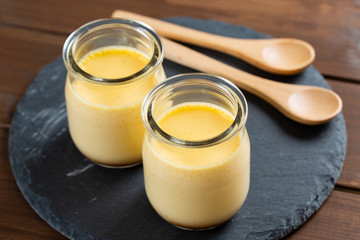

絶妙！とろーりなめらかプリン

材料 (約4個分)
【プリン液】
- 卵： 2個
- 砂糖： 40g
- 牛乳： 300cc
- バニラエッセンス： 少々
【カラメルソース】
- 砂糖： 30g
- 水： 大さじ1
- お湯： 大さじ1
作り方
- 【カラメルソース】小鍋に砂糖と水を入れ、中火にかける。鍋をゆすりながら好みの色になるまで。
- 好みの色になったら火を止めてお湯を加える。
(※はねるので注意) - 別の器に移して冷ましておく。
- 【プリン液】ボウルに卵と砂糖を入れてよく混ぜる。
- 牛乳を加えながらよく混ぜ、バニラエッセンスを加えて再びよく混ぜる。
- 【!】器が入るくらいのお鍋に高さ半分ほど水を入れてお湯を沸かす。
- 茶こしで濾しながら耐熱の器に入れ、アルミホイルでぴっちり蓋をする。
- 火を止めたお鍋に器を並べ、弱火で10分蒸す。再度火を止め、そのまま10分放置。
- 粗熱が取れたらアルミホイルからラップに変えて冷蔵庫で冷やして完成！
お好みでカラメルソースをかけてね！